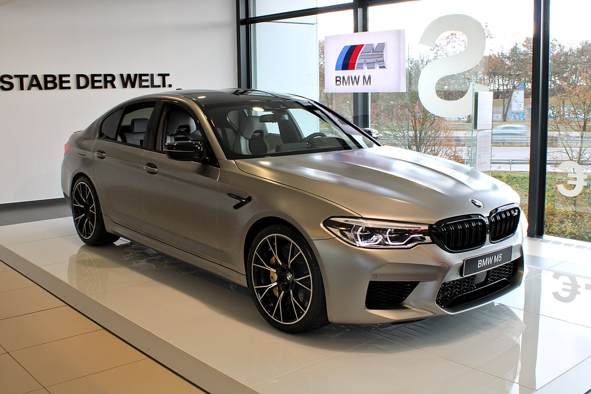

BMW F90 M5 შეიქმნა BMW M5 G30-ის ბაზაზე და პირველად საჯაროდ გამოჩნდა ფრანკფურტის ავტოსალონზე 2017 წლის სექტემბერში. BMW F90 M5-ის აჩქაქრება 0-დან 100 (კმ/სთ) კილომეტრამდე საათში სრულიად გაჩერებული მგომარეობიდან შეადგენს 3.4 წამს, ხოლო 0-დან 200 (კმ/სთ) კილომეტრამდე საათში 11.1 წამს.
 BMW wikipedia